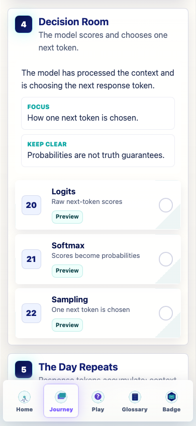
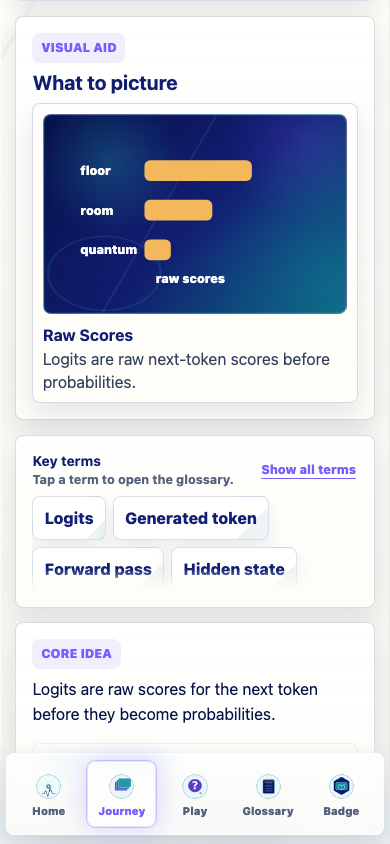
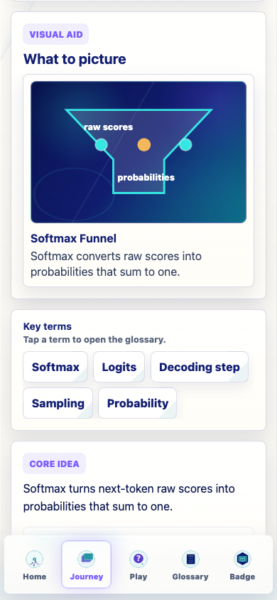
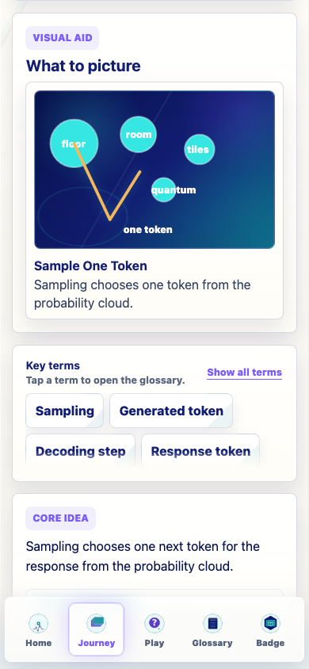
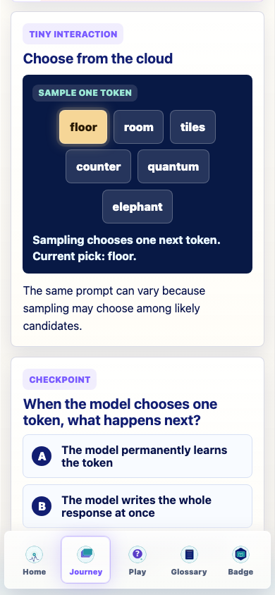
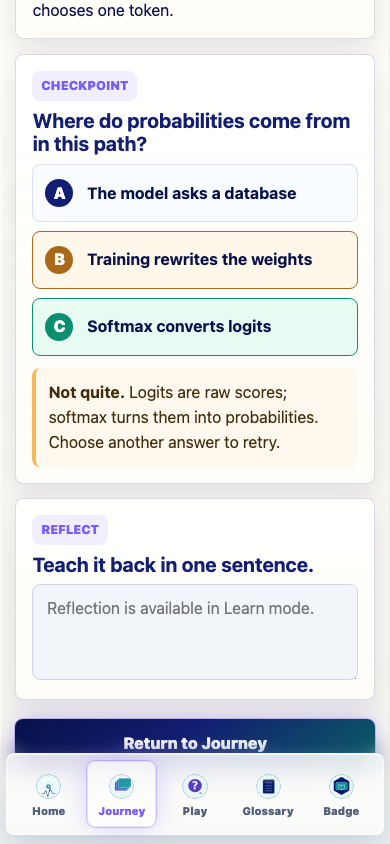
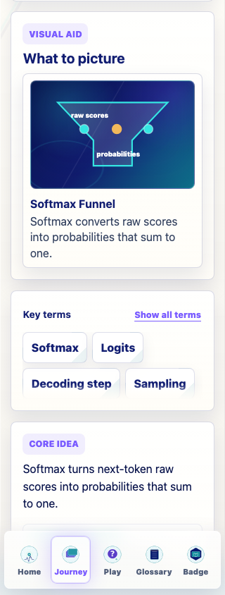

Prompt Life
v0.21 Decision Room Stage Audit
Documentation-only audit of Logits, Softmax, and Sampling. The stage order is correct, but the next pass should strengthen raw-score, probability-not-truth, and one-token decoding distinctions using coded SVG visuals and small non-competitive interactions.
Cards Audited
Logits
Accurate but thin. Needs its own raw-score visual and interaction.
Softmax
Needs before/after values showing probabilities sum to one.
Sampling
Strongest current bridge to append-and-repeat, but should show weighted probabilities.
Major Findings
- Decision Room still uses the older slim lesson schema.
- Probabilities are not truth guarantees, but that distinction needs to appear directly in each card.
- Logits and Softmax are textually distinct, but their interactions overlap.
- No Image 2 assets are recommended. Use coded SVG/HTML for all three visuals.
- Sampling should keep temperature simple and keep top-k/top-p mostly in glossary or optional deep copy.
Screenshots







Verification
npm run typecheck: passednpm run build: passed with the existing Vite large-chunk warningnpm run build:pages: passed with the existing Vite large-chunk warningnpm run audit:answers: passed- Screenshot QA: passed; temporary profile progress stayed
[].
Known Issues
- The worktree also contains pre-existing uncommitted v0.19.3 Glossary Dojo and v0.20.1 Workday files.
- The in-app browser did not deliver nav click events reliably, so screenshots were captured with a temporary headless Chrome profile.
- Bottom nav can appear over the bottom edge of tall screenshots, though controls remained reachable.